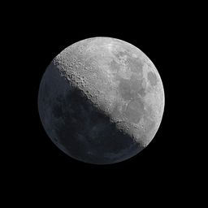
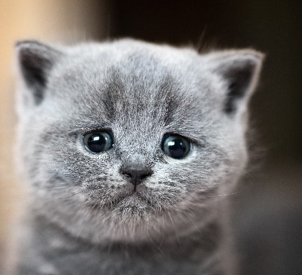

- Home
- Explore
- Notifications
- Messages
- Bookmarks
- Lists
- Profile
- More
Home

Brie @Sktch_ComedyFan · 3m
Giving standup comedy a go. Open mic starts at 7, hit me up if you want ticket #heregoesnothing
Giving standup comedy a go. Open mic starts at 7, hit me up if you want ticket #heregoesnothing
- 1
- 8
Harold @h_wang88 · 10m
Vacation is going great!

Vacation is going great!
- 1
- 8
Trends for you
#BreakingNews
Space
Lunar photography improves the discovery of the moon

10,094 people are Tweeting about this
#WorldNews
125K Tweets
5,094 people are Tweeting about this
#BreakingNews
Animals
These cats are ready for #internationalCatDay

2,757 people are Tweeting about this